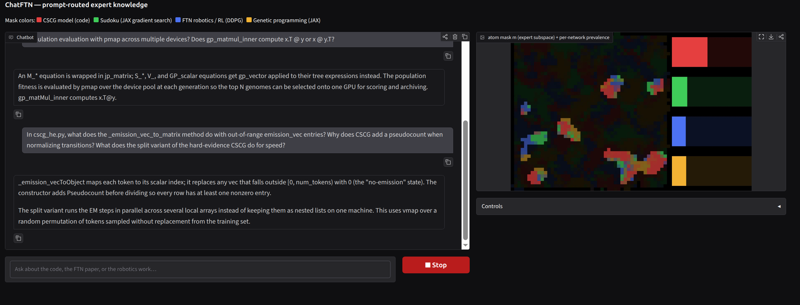
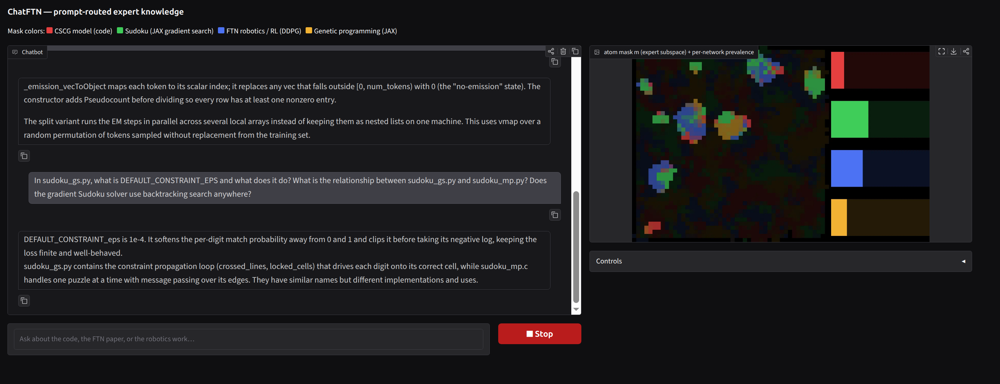
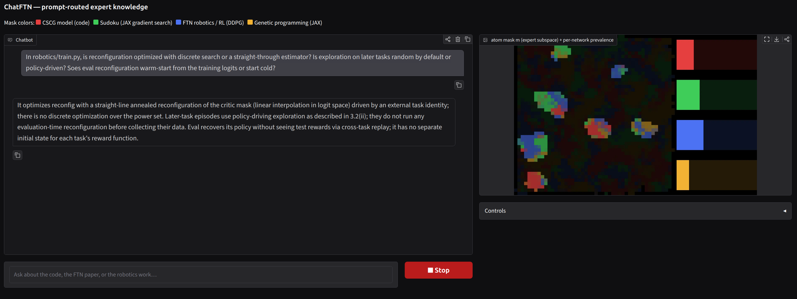
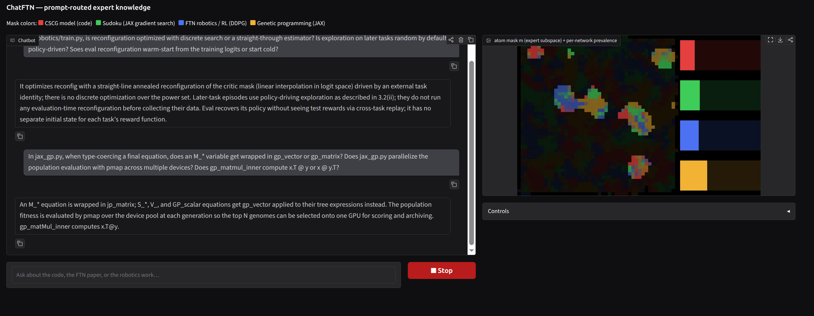

ChatFTN: Continual Post-training of Expert Domain Knowledge
I applied Functional Task Networks (FTN) of Low-Rank Adapters (LoRA), or FTN-LoRA, to post train a language model on different parts of my codebase, one project after another: CSCG, a Sudoku solver, FTN robotics, and genetic programming. Low-rank adapters form a shared population of trainable components, allowing each knowledge domain to recruit its own overlapping neural assembly.
CSCG

Sudoku

FTN robotics

Genetic programming

These four views come from the ChatFTN applet. When I ask about a different project, the model activates the trained neural correlates of that project and uses them to answer. The colors identify the knowledge domains; the bright regions show the active assembly, and mixed colors indicate components shared between domains. Click a thumbnail to read the conversation and inspect the corresponding activity.
Learning new material without losing the old
In a separate continual-pretraining experiment, I compared Transformer+FTN against a standard Transformer, TTT-E2E (test-time training), and a mixture-of-experts Transformer (MoE). Each model trains for 5,000 updates on WikiText, followed by 5,000 on CodeParrot—a shift from natural-language articles to Python code. The MoE baseline matches FTN’s total trainable and active parameter budgets to within 0.1%.

The left panel measures retention. After training switches to code, the standard Transformer and MoE lose much of what they learned from WikiText; TTT-E2E reduces that loss, while FTN nearly eliminates forgetting. The right panel shows that FTN still learns the new code domain. Before code training begins, FTN also has a better starting point than the standard Transformer or MoE, similar to the benefit seen with TTT-E2E.
The FTN curve is the original replay-free run, evaluated with its repaired input-conditioned mask. Vector figure · PDF
Applications of FTN to language models are ongoing, and these results are preliminary. The aim is a model that can keep acquiring specialist knowledge while retaining and recovering what it has already learned.